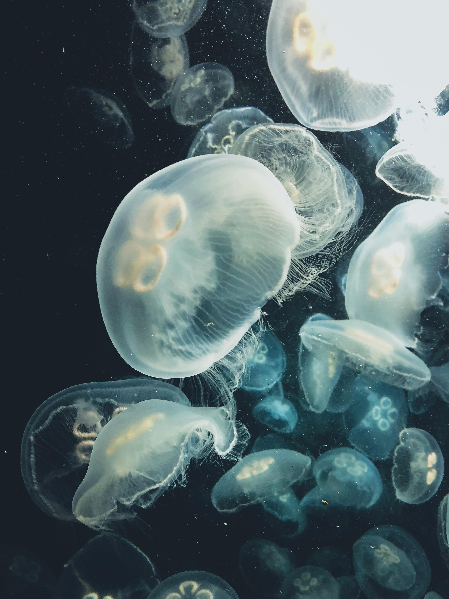

The open ocean stretches as far as the eye can see: a vast, boundless world where life floats, swims, and drifts with the currents. Unlike coastal waters, there are few landmarks here, no reefs or rocks to hide behind, just endless blue. From the tiniest plankton to swift predators patrolling the depths, every organism must adapt to life in this ever-changing, open expanse. So dive in and experience the wonders of a world where freedom, speed, and survival rule the waters!

Common dolphins are found in warm temperate and tropical waters worldwide, from nearshore areas to the open ocean. They feed on a variety of fish and squid, often joining other dolphins or even tuna during feeding events. They are highly social animals and can form pods of hundreds or even thousands of dolphins. They also have an interest in humans whenever they come across one, seeking out social interactions with humans! Dolphins are also highly intelligent, demonstrating advanced communication and complex problem-solving skills.

The ocean sunfish is a giant of the open ocean, growing up to 10 feet long and weighing over 2,000 pounds, making it the world’s largest bony fish! Despite their size, they’re harmless to humans and spend their day sunbathing at the surface, sometimes lying on their sides to let birds or fish clean off pesky parasites. They can lay millions of eggs at once, and propel themselves with their dorsal and anal fins since they have no tail unlike our typical image of a fish.
The swordfish is a sleek, ocean-going predator known for its long, flattened “sword” and incredible speed. Growing up to 177 inches long and over 1,400 pounds and slashing prey like squid with its powerful bill, they also rely on stealth and bursts of speed rather than group tactics to catch their prey. Their prey consists of fish such as mackerel, silver hake, herring, and rockfish, as well as squid and crustaceans. Swordfish have a special “brain heater” that keeps their brains warm in cold water, allowing them to dive deep. They are found in oceans worldwide, from tropical to temperate waters, and are capable of tolerating a wide range of temperatures.
A beautiful jellyfish, it gets its name from its translucent, moonlike bell! Their translucent, saucer-shaped bells show off four horseshoe-shaped gonads inside. Despite their delicate appearance, moon jellies have tiny stinging cells on their tentacles that help them catch plankton, mollusks, fish eggs, and even smaller jellyfish. Adult moon jellies drift with ocean currents, pulsating their bells to glide while feeding. They have no brain, heart, or bones, yet sense light and gravity using simple eyes and balanced organs called rhopalia. Moon jellies are a favorite snack for sunfish, leatherback turtles, chum salmon, and even some seabirds, but their sheer numbers can dominate plankton blooms and compete with fish for food.

You might recognize this bird as the main antagonist from Happy Feet Two! Tufted puffins are the ocean’s “clown” birds, sporting long yellow head plumes, bright white faces, and striking red bills and eyes during breeding season. Outside of breeding, their colors fade to gray with only a hint of plumes, and their bills turn orange and gray. Built for life at sea, they have waterproof feathers and use their small wings like fins to dive deep in search of fish. Their orange beaks have tiny spikes inside, allowing them to catch and hold up to 20 fish at a time while hunting underwater. Puffins also use their beaks to regulate body temperature after exertion, keeping cool after long flights.

Now, we get to the biggest animal in the ocean! Whales! They are divided into two main groups: baleen whales, like humpbacks and blue whales, which filter tiny prey such as krill using baleen plates, and toothed whales, including orcas, belugas, and dolphins, which use teeth to catch larger prey like fish and squid. The blue whale is the largest animal in the world, among both and and marine animals, and can weigh as much as 24 elephants! Just like how dolphins are seen jumping out of water gracefully, a whale weighing 30 tons can jump fully out of the water too!